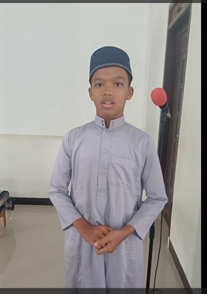

FOTO BEBERAPA SANTRI PPTQ WI ACEH


PPTQ WI ACEH merupakan salah satu pondok pesantren yang berada di bawah yayasan iskandar(YPIM)
pesantren ini berfokus pada pendidikan islamiyah di antaranya seperti=
berikut tokoh-tokoh penting dalam pengembangan podok pesantren di antaranya=

| NO | NAMA | ASAL | NAMA AYAH | NAMA IBU |
|---|---|---|---|---|
| .1 | ilham | aceh tenggara | jonh | susmida |
| .2 | nabil | banda aceh | marwan | suryani |
| .3 | rafa | aceh besar | khairul | id royani |
| .4 | zayyan | lhokseumawe | ridhanur | dewi novalizar |
| .5 | sastrawan | aceh tenggara | sholihin | ratna |
| .6 | sandi | aceh tenggara | bahagia | ana |
| .7 | yafar | aceh tenggara | buni amin | desrianty |
| .8 | putra | aceh tenggara | fikriudin | cut |
| .9 | muhammad an-nabiel | aceh timur | samsuar | cut safalia |
| NAMA NAMA BERIKUT BELUM MENCAKUP SEMUA SANTRI | ||||